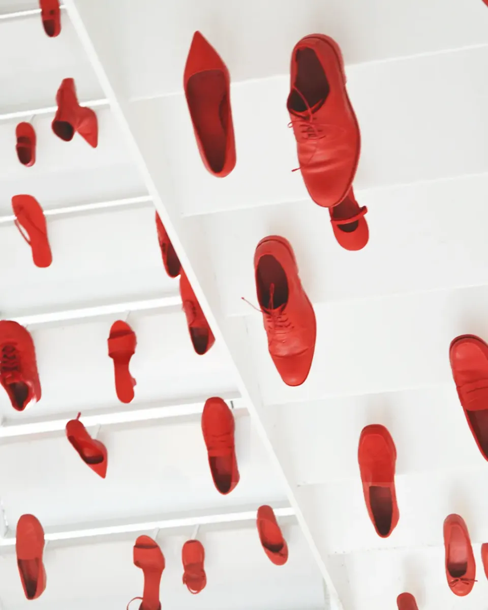

Escultura
Ecos
Instalación presentada en Hybrid Art Fair 26 (Madrid, Petit Palace Santa Bárbara, 5–8 marzo 2026). Evoca los ecos de las vidas cotidianas que persisten en un espacio común.
- Técnica
- Instalación · 108 zapatos rojos, 1 negro, audio
- Dimensiones
- Escalera de emergencia, 5 tramos
- Edición
- Obra única
- Año
- 2026
- Precio
- Consultar · bajo solicitud